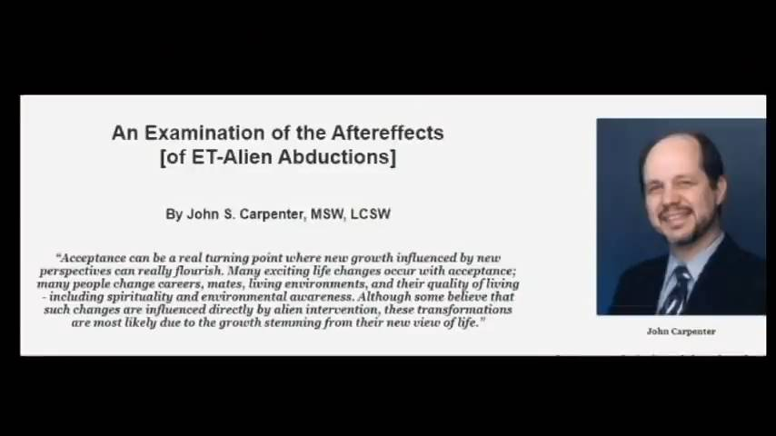

John S. Carpenter : ET abduction による後遺症の検討

前置き
一つ前の記事、
1982, CA : 道路脇に多色の奇妙な UFO が着陸 → missing-time、発話に一時的障害、運転者が入れ替わっていた ⇒ この正体を推測
のソース動画で
として参照されていた Web 記事を取り上げる。
コメント
John S. Carpenter は症状や現象を整理・羅列しているが原因の分析までは至っていない。
彼が列挙した 20項目の「abduction の後遺症」の内、
(15) 見かけの超能力-必ずしも望んだり評価されたりするものではないが、多くの興味深い事件が見られる。これは、生涯のUFO体験を持つ被験者と相関性が高いようだ。 (16) ポルターガイスト的な活動：壁をたたく、ドアが閉まる、物が飛ぶ、他の物が消えて後で意外な場所に再び現れる。この中には、発達したけれども実現されていない精神運動能力の結果であるものもあるかもしれない。 (18) 異常な電気的効果（明らかに疑わしい遭遇の直後に起こる）：オーブン、電子レンジ、食器洗い機、コンピュータ、テレビ、そして街灯（下を通るとき）さえも短絡させる。ある被験者は、キルリアン写真フィルムの一部を手で「白く」してしまった。
の 3項目だけは現時点では説明不能だが、残りの 17項目は全て
・(a) EMF 異常による orb や大気中の発光現象...1,
・(b) EMF 異常による身体反応 ............... 5, 11
・(c) EMF 異常による意識障害、記憶障害........2, 6, 7, 8, 9, 14
・(d) EMF 異常が神経系に及ぼした残留効果......3, 4, 10, 12, 13, 19, 20
として合理的に説明がつく。項目 17 の謎のクリック音は最近、機序が判明し下の記事
UFO/Bigfoot 遭遇に伴うクリック音の謎を解く
で詳しく説明した。なお、c と d の線引が明確にはしがたい項目もある。
出典
Aftereffects-of-Alien-Abductions https://www.alienjigsaw.com/et-contact/Carpenter-Abductions-Aftereffects-ET-Alien-Abductions.html
DeepL
bio
ジョン・カーペンター
デポー大学（インディアナ州グリーンカッスル）で心理学の学士号を、ワシントン大学（ミズーリ州セントルイス）でソーシャルワークの修士号を取得する。ミズーリ州ブランソンで精神科医および催眠療法士として活動するために、臨床催眠の上級訓練を受けた。32年以上にわたり、ミズーリ州南西部の人々に、想像しうるあらゆる種類の心の問題をカウンセリングしてきた。
UFOへの好奇心から、UFOによるアブダクションの可能性がある150以上のケースにボランティアとして参加。巧みなインタビュー技術と徹底した催眠術による調査により、地球外生命体との接触という一貫したシナリオを明確に描き出す、驚くべきデータパターンを収集した。1992年、ボストンで開催された権威あるMITアブダクション・スタディ・カンファレンスで6本の論文を発表。発表した論文により、国際的に認められ、5大陸で講演の招待を受ける。オーストラリアからイギリスまでの会議で発表し、国内外のラジオ、テレビ、映画のドキュメンタリー番組にも出演している。1996年以来、10本の研究用DVDを制作。
カーペンター氏は、1991年から2000年までMUFONのアブダクション・リサーチのディレクターを務め、JAR: Journal For Abduction Encounter Researchの創設メンバーでもある。ジョン・カーペンターは現在、「Invaded」というタイトルの本を執筆中である： 現在、「Invaded: Human Contact With Non-Human Beings」という本を執筆中で、世界中でプレゼンテーションが可能です。
後遺症の考察
後遺症の考察 [ET-エイリアンによるアブダクションの）後遺症の検討
ジョン・S・カーペンター（MSW, LCSW）著
「受容は、新しい視点に影響された新しい成長が本当に花開くターニングポイントになり得ます。多くの人がキャリアを変え、仲間を変え、生活環境を変え、スピリチュアリティや環境意識を含めた生活の質を変えていく。このような変化は、宇宙人の介入が直接影響していると考える人もいるが、これらの変化は、彼らの新しい人生観に由来する成長によるものである可能性が高い。
異世界の存在との接触を認識し、自覚した後に人々が経験することについては、しばしば多くの仮定がある。そのような考えを助長するような催眠術や調査方法によって、その人たちはトラウマを負っているに違いないと考える人も少なくない。しかし、私自身の120例の経験では、すぐに安心し、理解が深まり、混乱が少なくなり、健全だが困惑するような意識、そして確かに大きな驚きがあるようだ。非日常的な出来事や奇妙なイメージを思い出しても、明らかにパズルが解けたような感覚を覚えます。かつては欠片のある混乱した謎であったものが、今ではより完全な絵となり、アブダクティにとって意味をなす新たな欠片を処理し、安堵感をもたらしています。ここ数ヶ月で一番よく眠れるようになった、以前は誤解していた人生の出来事が理解できるようになった、原因が判明した刺激に対する恐怖症の反応が減少した、などという声が聞かれます。例えば、「落ちる」ことに恐怖心を抱いていた人は、そのような反応の原因がどこにあるのかを理解することができるようになりました。漠然とした世界的な恐怖感から、具体的な原因を知ることで、あらゆる恐怖の原因が絞られ、安心することができるのです。そして、その内容はとても奇妙で突拍子もないものですが、それでも被験者はこの安心感を味わうのです。
もう一つの俗説は、"誰もが集中的なセラピーを必要とする "というものです。実は、このような出会いの対象者は、通常、心理的に健康で、何らかの問題の既往歴がほとんどないため、継続的なセラピーはほとんど必要ないのです。サポートグループは、感情を共有し、正気を取り戻し、正常な感覚を取り戻すのに効果的であった。最も一般的な治療過程は、悲嘆の過程に似ている。被験者は、かつての現実、つまり宇宙人やUFOが存在しない現実を失って悲嘆に暮れているのです！今、彼らは、現実、他の生命体、そして宇宙の異なる見方についての全概念を再考するよう、蹴飛ばされ、叫ばざるを得ない状況に追い込まれています。彼らは、自分の許可もなく、何の説明もなく、このようなことが起こったことに腹を立てるかもしれません。自分たちが孤独で不信感を抱いていることを知り、落ち込むかもしれません。彼らは間違いなく、そのような考えを否定し、平凡でより受け入れやすい説明を広めようとするでしょう-内心では違うと思っているのですが。また、「もう1回遭遇できたら、この現象を信じることにしよう」と交渉することもあります（おそらく完全に意識がある状態で）。悲嘆の他の段階（否認、怒り、抑うつ、駆け引き）と同様に、最終段階の「受容」は、新しい視点による新しい成長が本当に花開くターニングポイントになることがあります。多くの人が、キャリアや仲間、生活環境、そしてスピリチュアリティや環境への配慮など、人生の質を変化させるのです。このような変化は、宇宙人の介入が直接的に影響していると考える人もいますが、これらの変化は、新しい人生観からくる成長によるものである可能性が高いのです。
書くこと： セラピー的な対処法
もう一つの神話は、ほとんどのアブダクティが体験を受け入れると、本を書いたり売名行為に走ったりするという考え方にまつわるものである。私の120例のうち、本を書こうとした人は5％しかいませんし、本当に売名行為を望んだ人もほとんどいません。本を書くことは、対処療法であり、情報を処理し、他の人を教育したり助けたりすることなのです。最も深刻なテーマであるにもかかわらず、その秘密主義と不信感に憤慨した人もいます。彼らは、自分の体験を大胆に書き、語り、無知を減らし、人々の意識を高め、発言することを恐れている人々の擁護者となるのです。残りの95％のアブダクティは、このテーマと公に関わることを避けています。社会的なサポートを必要とする人々にとっては、サポートグループが唯一の出口となることもあります。ある人は、このテーマに魅力を感じ、調査員になる。また、UFO会議に出席し、個人的に知識を深める人もいます。ほとんどの場合、調査から得たものをもとに、静かに通常の日常生活に戻り、社会に溶け込もうとする。
セラピストは、人々が動揺し、厄介な遭遇を報告しているコンタクトケースだけを受け取るということに留意すべきである。世の中には、このコンタクト体験を認識し、自分自身で対処している人がたくさんいます。彼らの反応、信念、対処法は、セラピストや調査員を探さなかったために、あまり知られていません。ですから、私のようなセラピストが提供する情報は、データの偏ったサンプルとなります。
その他の後遺症については、世界中で一貫して見られる魅力的なパターンがいくつかあります。アブダクションに遭遇した直後から、多くの人が家の中で電気系統の異常を報告しています。電化製品の電源が勝手に入ったり切れたりする、あるいはコンセントを抜いたのにそのまま動き続ける！土や木など、ありえない素材に触れると、異常な衝撃が起こることがある。食器洗い機、電子レンジ、照明、コンピュータ、小型家電などに触れると、ショートすることがある。コンピュータのそばにいられなくなり、仕事を失った人が何人もいる！アブダクティ自身が「充電」されているように見え、キルリアン写真を利用すると驚くべき結果を出すことができます。街灯が消えるという、単なる「都市伝説」のような話には、明らかに妥当性がある。このような質問をすると、多くの被写体がこの現象を報告し、それが他の誰にでも起こったことに驚いています。また、磁石に敏感であるという一般的な報告もあります - 磁石がどこにあるかを感知することができ、おそらくその近くにいることはできません。
サイキック能力・サイコキネシス
かなり多くのケースは、家庭内で強化されたサイキック能力とおそらくサイコキネシスを示しています。このようなケースは、あまり望まれないし、評価もされないが、これらの人々は、偶然をはるかに超えた物事を知っていることに気づき、しばしば物が動いたり、部屋の中を飛んだりするのを観察する。ある女の子は、飛んでくる本や服をかわすのが不思議だとは思わなかったと、友達の家でそれが起きないことがわかるまで話してくれました！これらの存在が強いテレパシー能力を使用していることを示唆する研究データが一貫していることから、彼らが日常的にこれらの能力を持っていることに気付くほど、生涯にわたって誘拐された人々の能力を「訓練」または「行使」している可能性は十分にあります。しかし、このような能力の効果的な使い方を知っているということではなく、家庭内で起こるランダムな念力現象を説明することができるかもしれません！
多くの[アブダクティ体験者]は、「教室のような場所で一晩中起きていて、情報を教えられたり、何かの技能を訓練されたりした」と感じたと報告しています。疲れ果てて目覚めたとき、それが何を教えられていたのか思い出せないケースは1つもありませんが、すべての人が、後の時点で知ることを許されるという明確な印象を受けます。もし、これが夢や妄想であれば、教えを受けたという詳細な報告がたくさんあるはずです。しかし、信憑性の高い事例では、誰もその "教え "を覚えていないことが非常に多いのです。
症状別レビュー
症状別レビュー [ET-エイリアンアブダクションの】について］
ジョン・S・カーペンター、MSW、LCSW著
「これらの20の側面は、アブダクションの研究において、どのような種類のデータを期待し、注意すべきかという良いアイデアを研究者に与えてくれます。すべての側面が各被験者の世界の一部になるわけではないが、研究者はどのような調査でも起こりうることを知っておく必要がある。"
UFO乗員との予期せぬ接触を体験している人に共通して見られる特徴はたくさんあります。ただ、珍しい傷跡があるとか、奇妙な光を見たとか、宇宙人の夢を見たとかいうのは、必ずしも何かを意味するものではない。このような体験談には、感情や反応、その他の側面も考慮しなければなりません。しかし、徹底的な調査の結果、パターンが生まれてきています。どの症状も完全であることを保証するものではなく、また必ずしも正確であることを保証するものでもないが、次のような点を考慮に入れてほしい：
(1) 未確認飛行物体や異常な光源を観察する。(1)未確認飛行物体や異常な光源を目撃する。畑や寝室、車内など一帯を照らす光も含まれる。また、ゴルフボールからビーチボール程度の大きさの動く光の玉（赤、オレンジ、黄、白）も含まれ、家の外や中で目的意識を持って移動する姿がよく見られる。カリフォルニアからプエルトリコにかけての事例では、これらの侵入した光の一部が予期せぬ訪問者に変化することが示唆されています。
(2)原因不明の記憶喪失や「時間の欠落」-他の参加者と共有することもある。このような記憶喪失の共有は、4人ほどが同時に始まり、同時に終わるため、医学的な説明はなされていない。
(3) 不眠、イライラ、不安、疲労が突然起こり、前駆症状がない。時間の経過があったかもしれないが、おそらく、かなり後になってから、そのことに気づいたり、関連性を認識したりしたのではないだろうか。
(4) UFOや宇宙人に関するものでなくても、奇妙な顔、場所、手順、感情を含む、異常な内容の鮮明な夢。例えば、ある女性が、歯科医院で大きなガマズミの上で大きな白蟻に診察される悪夢を繰り返し見ることがある。不条理で、日常生活との関連も明らかでないにもかかわらず、彼女は恐怖を感じる。
(5) 突然、原因不明の奇妙な「すくい跡」、精密な切開、針跡、穿刺、幾何学的な形のあざが現れる。被験者は通常、最初はこれらを最小化するか無視する。また、急速に治癒することもある。
(6) 15～20年経っても無視できない、「何かが起こった」という感覚に駆られる、または悩まされる。
(7) 説明のつかない物理的な空間のずれ：就寝して目が覚めると近くの畑に立っている、車を運転すると次の瞬間、車は牧草地に駐車し、被験者は別の畑にいる、間違った寝室やベッドで目が覚める、など。
(8) 環境中の物体に対する感情的な反応 - 過敏症や恐怖症のレベルまで。ある被験者は、人形に対して強い恐怖心を抱くようになった。その他、ホッケーマスク、点滅する光、フクロウ、暗いサングラスをかけた人、三角形の標識などを怖がるようになった。
(9) 明白な理由もなく、不安を引き起こす環境中の場所を避ける。ある人は、特定の道路を避けるために、毎日完全に道を外れて運転することがある。子供は、裏庭で遊んだり、自分のベッドで寝たりすることを拒否することがある。
(10) 意識的に意味のない奇妙なイメージを落書きし続け、その奇妙な落書きのいくつかを20年にもわたって保存する。
(11) 鼻、耳、穿刺、直腸からの原因不明の出血。これは、珍しい夢や時間のない期間と一緒に起こると、より関連性が高くなる傾向がある。
(12) 自分の名前を呼ぶ声がはっきりと聞こえ、おそらく対象者が目を覚ますと、立ち上がり、外を歩いたり、どこかへドライブしたりすることを強いられる。
(13) 夜間の感覚：（奇妙な夢、突然の傷、異常な光と関連している場合はより重要）ベッドの上で浮いているような感覚、ベッドから引き出される感覚、突然熟睡したくなる（興奮や活動があったにもかかわらず）、突然目が覚める-まるで誰かがスイッチを入れたかのように）、自分が座っているか立っているかで目が覚める-時には他の人と同時に。
(14) 「スクリーン・メモリー」：台所にいる鹿、ベッドの端にいる4フィートのシマリス、ベッドにいる被験者の鼻と鼻をつなぐヤマネコ、自分の車を止める4フィートの白いフクロウなど、ありえない場所にいる白い動物の映像。
(15) 見かけの超能力-必ずしも望んだり評価されたりするものではないが、多くの興味深い事件が見られる。これは、生涯のUFO体験を持つ被験者と相関性が高いようだ。
(16) ポルターガイスト的な活動：壁をたたく、ドアが閉まる、物が飛ぶ、他の物が消えて後で意外な場所に再び現れる。この中には、発達したけれども実現されていない精神運動能力の結果であるものもあるかもしれない。
(17) アブダクションの直前に頭の中で音がする：ブーン、ヒューヒュー、モールス信号のビープ音、クリック音、音楽音、あるいは「頭の中の音叉」からのような振動音。
(18) 異常な電気的効果（明らかに疑わしい遭遇の直後に起こる）：オーブン、電子レンジ、食器洗い機、コンピュータ、テレビ、そして街灯（下を通るとき）さえも短絡させる。ある被験者は、キルリアン写真フィルムの一部を手で「白く」してしまった。
(19) 被験者は、UFOや宇宙人に関する興味や知識をほとんど持っていないことが多い。彼らは通常、自分の異常な体験を合理化し、最小化しようとする-時には非合理的あるいは不条理なまでに。
(20) 被験者は、臨床面接と心理テストの両方で、通常、体験の原因となるような心理的性質の問題は持っていないことが判明している。被験者は通常、人目を恐れ、嘲笑を恐れ、誰にも話すのをためらう。
これらの20の側面は、研究者がアブダクション研究でどのようなデータを期待し、注目すべきかの良いアイデアを与えてくれます。すべての側面がそれぞれの被験者の世界の一部になるわけではありませんが、研究者はどのような調査でも起こりうることを知っておく必要があります。
(2023-06-20)
初出
❑ John S. Carpenter : ET abduction による後遺症の検討 (2023-06-20)